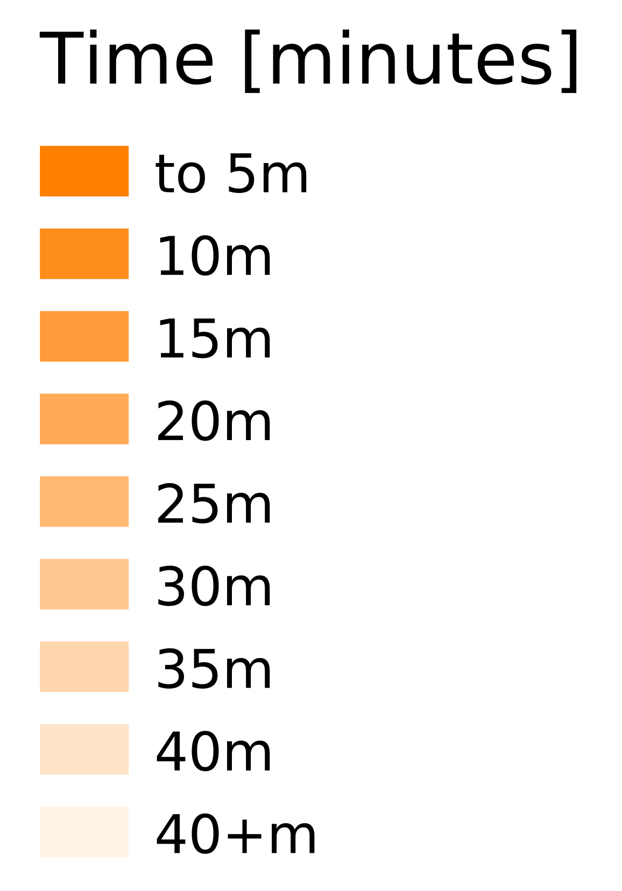
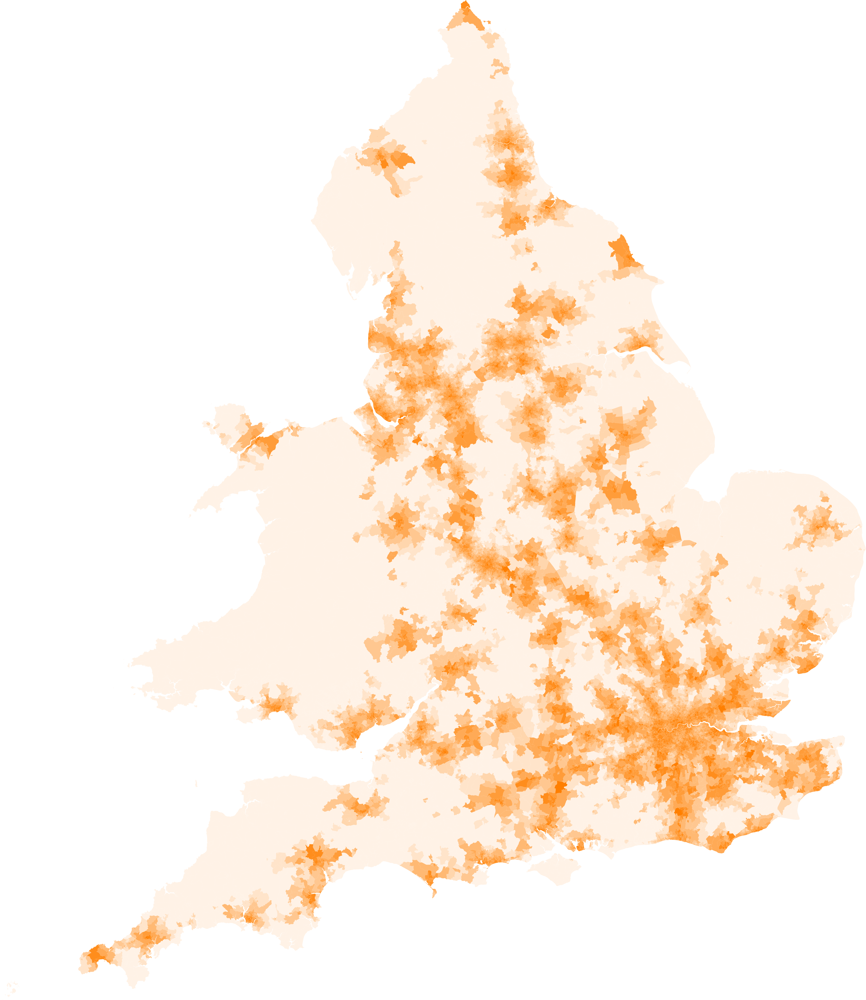

Combined Public Transport and Rail Travel Times
Visualisation based on Department of Transport combined Public Transport and Rail Travel-Time data. The project directory is here This shows shortest public transport connection times for in England and Wales via 180 rail stations in Great Britain
| Legend | Combined (07:00-00:00) |
|---|---|
|  |  |